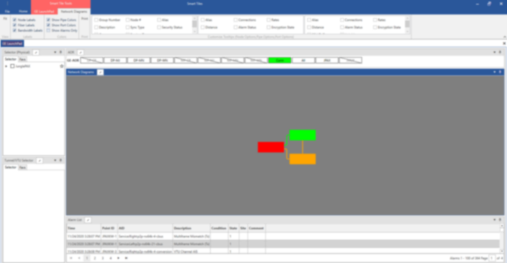
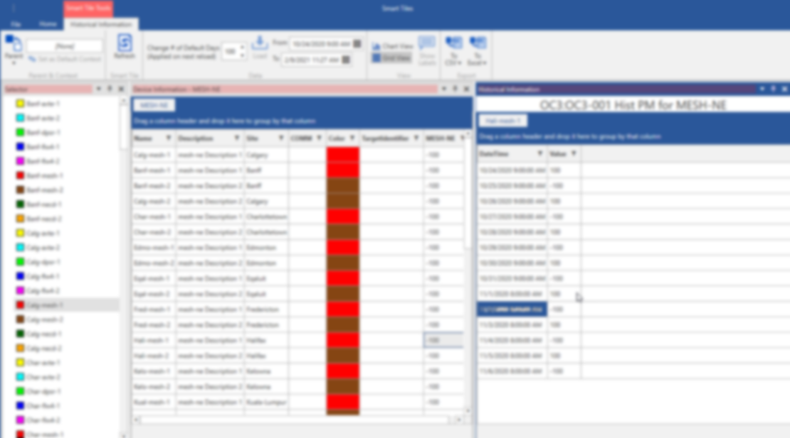
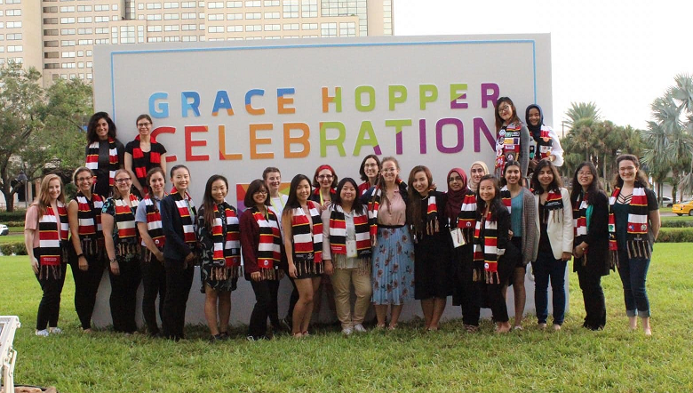

Professional Experience
Junior Developer - SmartTiles
MegaSys Computer Technologies12/2019 - present
The main product at MegaSys is Telenium®, a software suite used for Network Management. SmartTiles is one of the products inside of Telenium.
SmartTiles is a dashboard application composed of different ‘tiles’ which provides users with a visual aid to help monitor their network.
- Working on a customer project which enhances existing SmartTiles’ tiles to showcase alarms and services in an efficient manner based on the needs of the customer’s system.
- Developed features used in a wizard-like application for a client to streamline their current workflow of creating network services.
- Co-developed two new SmartTiles’ tiles, that showcases network alarms and charts containing historical details about the alarm.
- Involved in all software stages; from requirements, design, implementation, and unit testing.
- Fixed bugs and added feature enhancements to existing SmartTiles Applications.
- Technologies used in all projects: C#, WPF, Telerik UI Controls, Visual Studios, Bitbucket and Jira. All projects follow the MVVM architectural pattern.
- Unit tests are written using Microsoft Fakes Framework.
|  |  |
Quality Assurance
MegaSys Computer Technologies05/2019 - 12/2019
- Built new servers and created snapshots to test new product builds and new Linux kits.
- Tested product installation, product upgrade process, and verified documentation steps.
- Performed regression and smoke testing on the Telenium application suite.
- Contributed to a script to auto-populate servers with data which allowed for identical test data.
- Created automated test cases using Telerik Test Studio.
- Tested server scripts and SQL migration scripts.
Capstone Project
Circle Cardiovascular Imaging09/2017 - 04/2018
The goal of this capstone project was to develop a web application that would render a 3D model of a heart using data from CT and MRI scans.
This project was designed for Circle Cardiovascular Imaging and was successfully delivered at the end of the semester.
- Worked with 4 engineers to perform requirement elicitation and to implement a design appropriate for the application.
- This included modelling the architecture with UML drawings of the high and low level designs.
- Worked within an agile environment, by actively participating in scrum and sprint meetings.
- Developed using the AngularJS framework, three.js 3D library, HTML, CSS and JavaScript.
Subsurface Applications Support Intern
Nexen Energy ULC05/2016 - 08/2017
16 month internship as part of the Schulich School of Engineering Internship Program.
Some of my accomplishments included:
- Successfully coordinated and managed upgrades of more than 20 applications which impacted more than 600 users across several asset areas.
- Provided support to users in regards to application issues or questions. Applications included PetroWeb, Spotfire, and Palantir.
- Managed and maintained the migration of ArcSDE feature classes across multiple environments.
- Analyzed and monitored application usage with data analytic reports created in Spotfire.
- Trained incoming and current staff on different work processes and created documentation.
- Participated in change management process, and implemented many changes in production.
Professional Development
Some conventions and workshops which I have participated in:- Grace Hopper Celebration of Women in Computing - 10/2015 & 10/2017
- GeoAlberta Conference - 03/2017
- FME Desktop 2016 Basic Training Course - 11/2016
- Lighthouse Labs - HTML[500] - 01/2015
|  |